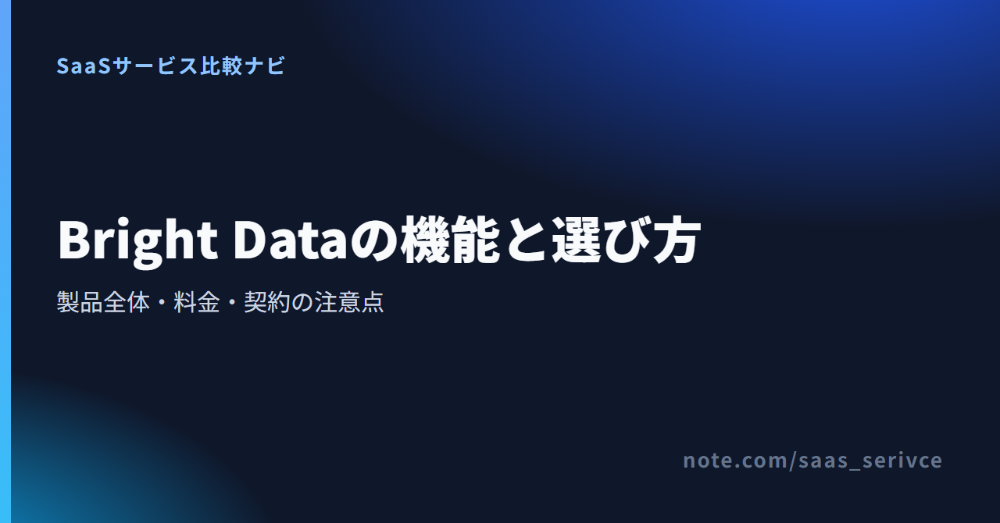
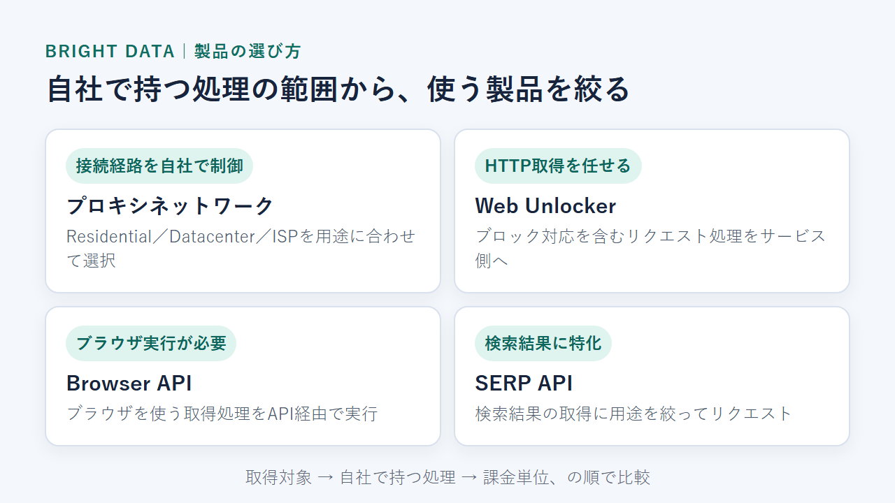
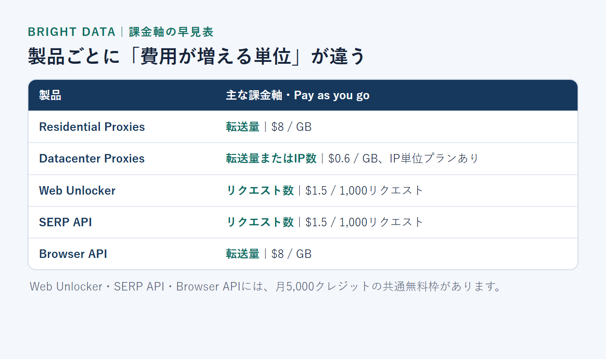
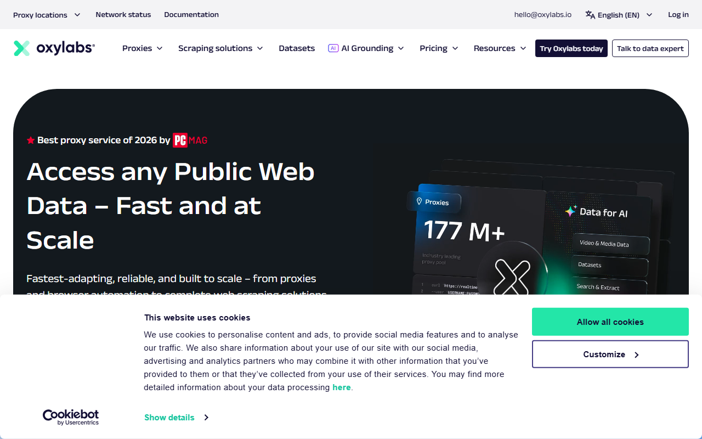
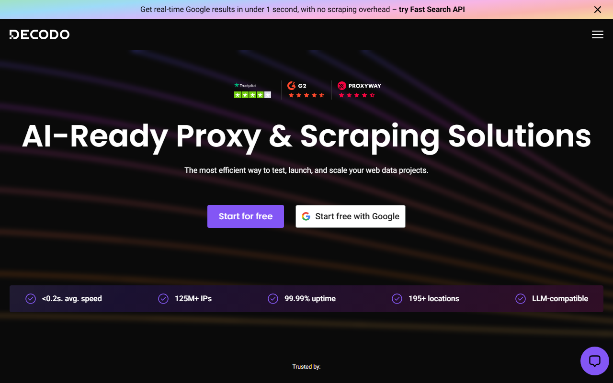

Bright Dataとは？機能・料金・使い方と日本から契約するときの注意点を解説
Bright Dataは、企業や開発チームが公開Webデータを集めるためのサービスです。プロキシに加え、ブロック対応・ブラウザ実行・検索結果取得のAPIも提供しています。
製品ごとに課金単位と無料枠が異なるため、料金の仕組みは少し複雑です。この記事では、機能と料金、日本語対応、登録後の流れを紹介します。
Bright Dataの主要6製品と3つの課金単位
- Residential：$8/GB／初回$2クレジット
- Datacenter：$0.6/GB〜／初回$2クレジット
- ISP：$8/GB／初回$2クレジット
- Web Unlocker・SERP：$1.5/1,000件
- Browser API：$8/GB
- API無料枠：月5,000クレジットを共有
IPを自社で制御するなら、各プロキシが候補です。ブロック対応を任せるならWeb Unlocker、検索結果だけを集めるならSERP APIが向いています。
公式サイトでは、各製品の機能と無料で始められる対象が分かります。
Bright Dataとは？プロキシだけではない製品の全体像

公式トップは日本語で表示されます。「無料で開始」と「クレジットカードは必要ありません」という案内もあります。
このサービスには、公開Webデータへ接続して取得する方法が複数あります。スペースなしの「BrightData」やカタカナの「ブライトデータ」も、同じサービスを指します。

料金ページでは、製品ごとの課金単位とプランが分かります。
IP接続を自分で制御するプロキシネットワーク
プロキシはResidential／Datacenter／ISPの3種類。利用者側で取得処理を用意し、Bright Dataから接続用のIPを調達します。製品によってGB課金とIP課金があるため、予算の立て方も変わります。
ブロック回避やブラウザ実行を任せるWeb Unlocker・Scraping Browser
Web Unlockerの料金はリクエスト数、Browser APIは転送量のGBが基準です。HTTPリクエストが中心ならWeb Unlocker、ブラウザ実行が必要ならBrowser APIを選びます。
検索結果の取得に特化したSERP API
SERP APIは、検索結果の取得に特化した製品です。料金はリクエスト数で決まります。
Bright Dataでできることと製品の選び方
候補は「取得対象」「自社で担う処理」「課金単位」の順に絞ります。まず、自社の要件に最も近い項目を選んでください。
接続先やIPを細かく管理したいならプロキシ
取得処理を自社で用意し、接続経路を細かく制御したい場合はプロキシが候補です。転送量とIP数のどちらが費用を左右するかを見積もります。
ブロック対応まで任せたいならWeb Unlocker・Scraping Browser
HTTPリクエストのブロック対応を任せるなら、Web Unlockerが候補です。ブラウザ実行まで必要ならBrowser APIを選びます。
検索結果を取得したいならSERP API
検索結果だけが必要ならSERP APIを選び、検索語数と取得頻度からリクエスト数を見積もります。
料金と無料枠は製品ごとに課金軸が違う
全製品を同じ条件で使える月額固定の無料プランはありません。対象APIとBrowser APIには、月5,000クレジットの共通枠があります。プロキシ向けの一回限りのトライアルクレジットは別枠。

- プロキシ：ResidentialはPay as you goが$8/GB。DatacenterにはGB課金とIP単位の月額プランがあり、ISPにもGB課金とIP課金があります。
- Web Unlocker／SERP API：通常のPay as you goはそれぞれ$1.5/1,000リクエストです。無料利用分は対象製品で共有するクレジットから消費します。
- Browser API：Pay as you goは$8/GBで、月額固定のScaleプランもあります。無料利用分は同じ共通クレジットの対象です。
取得量を課金単位に当てはめて見積もります。期間限定の割引表示と通常単価は、分けて見てください。
共通クレジットの消費量と、有料利用へ移った後の課金単位は製品ごとに異なります。使う製品を決めたら、該当する料金ページと照らし合わせてください。
プロキシは転送量とIP数で課金方式を選ぶ
ResidentialにはGB単位の従量課金と月額プランがあります。DatacenterとISPでは、GB単位に加えてIP単位のプランも選べます。予算を左右するのは、転送量かIP数か。先に見極めましょう。
Web UnlockerとSERP APIはリクエスト数で考える
有料利用は、Web UnlockerもSERP APIも1,000リクエスト単位です。無料枠では、どちらも1リクエストにつき1クレジットを消費します。
無料で試せる製品とカード登録の条件
新規アカウントには、カード登録不要で月5,000クレジットが付与されます。Web UnlockerとSERP APIは、1リクエストあたり1クレジットを消費します。Browser APIは1MBあたり5クレジット。全量をBrowser APIに使うと約1GB相当で、対象製品は一つのアカウントで無料枠を共有します。
Residential／Datacenter／ISPの各プロキシは月額無料クレジットの対象外です。別枠として、新規登録時に一回限り$2のトライアルクレジットが付きます。有効期間は7日間。支払い方法を追加すると$5のボーナスが付き、30日間利用できます。
メリット・注意点・公開レビューから分かること
製品が多いため、選び方を誤ると料金を見積もりにくくなります。日本語UIの範囲に加え、KYCと返金条件も契約前に見ておきましょう。
主なメリットは次の3点です。
- プロキシ、Web Unlocker、Browser API、SERP APIを同じブランド内で検討できる
- 自社で制御する範囲とサービス側へ任せる範囲を分けられる
- 従量課金から始められる製品と、クレジットカード不要の無料枠がある製品を選べる
契約前には、次の4点も押さえておきましょう。
- 製品ごとにGB、IP、リクエスト数と課金軸が変わる
- 日本語の公式サイトと料金ページはあるが、管理画面の日本語対応範囲は公開情報だけでは判断できない
- Residential Proxiesなど一部製品ではKYCが必要になる
- サブスクリプション料金は解約しても返金されない条件がある
自社で担う処理に合わせて取得方法を選べる
接続経路を自社で制御するか、取得処理をサービス側へ任せるかで製品を選べます。検索結果だけが必要なら、SERP APIに絞ると迷いません。
料金管理と初期設定には学習コストがかかる
月額だけでは費用を判断できないため、転送量／IP数／リクエスト数のうち増えるものを見積もります。選んだ製品の設定を覚える時間も見込んでください。
KYC・利用規約・返金条件は契約前に見る
通常のResidential ProxiesでKYCを申請する場合、登録企業と企業ドメインのメールが対象です。申請時には、利用目的を確認されます。追加で求められる場合があるのは、身分証明書の提出やビデオ通話。ステータスは申請後48時間以内に更新されます。
robots.txtに従うImmediate Residential AccessはKYC不要。固定期間の定めがない契約は、事前の書面通知を相手方が受領した暦月の末日で終了します。ただし、サブスクリプション料金は返金されません。
Webデータを取得するときは、対象サイトの利用規約と適用法令を確かめてください。サービス側の用途審査もあるため、「合法」「安全」と一律には判断できません。
公開レビューは利用者属性と投稿経路を見て読む
ITreviewには、小規模企業のIT管理者による有償利用の投稿があります。管理画面の案内は、製品選びや初期設定に役立ったとのこと。細かな設定は、チャットや文書だけでは分かりにくかったそうです。
別の小規模企業は、SERP APIを顧客向けシステムへ組み込みやすかったと評価しています。日本向けサイトや製品マニュアルの翻訳不足も挙げました。
ITreviewでBright Dataの公開レビューを見る
投稿には販売関係者によるものも含まれるため、全利用者の評価を代表するわけではありません。自社と利用製品や契約規模が近く、投稿者の立場も似たレビューを参考にしてください。
日本語対応と日本からの契約・支払い
日本語の公式サイトがあっても、申込み後の設定まで日本語だけで進められるとは限りません。日本語で使える範囲はサイトと管理画面で異なり、有人サポートと決済にも別の条件があります。
日本語サイトと料金ページはあるが、管理画面の日本語UIは未確認
brightdata.jpには、製品紹介やサポート案内があります。日本語の料金ページにはUSD単価も載っており、説明は日本語で読めます。製品名やUSDの単位は英語表記です。
管理画面全体の日本語UI対応範囲は、公開情報だけでは判断できません。日本語UIが必須なら、必要な設定項目を契約前に実際の画面で確かめてください。
日本語サポートの個別明記は確認できない
日本企業向けページには、主要言語での24時間サポートとの案内があります。日本語チャットやメール対応の記載は見当たりません。標準サポートは営業日ベースのメール。PremiumとEnterpriseは24時間対応で、Enterpriseには専用Slackチャンネルもあります。
日本語の有人対応が必須なら、契約前に対応言語と窓口を問い合わせてください。
日本からの支払い方法と請求書の条件
セルフサービスでは、次の支払い方法を選べます。
- クレジットカード
- PayPal／Alipay／Payoneer
- Google Pay／Apple Pay
大口アカウントではWire transferも選べます。具体的な最低金額は記載されていません。日本企業が想定する請求書払いと同じ仕組みかどうかも不明。カードブランドも記載されておらず、JCBが使えるとは断定できません。
領収書をダウンロードできるかどうかは公開情報で分からず、日本の適格請求書に必要な登録番号も記載されていません。税務上の処理が必要な場合は、契約内容と証憑をそろえて税理士に相談してください。
使いたいカードブランドや日本語の有人対応が必須なら、申し込む前に対応可否を問い合わせてください。
Bright Dataの始め方：製品選択から小さなテストまで
製品を決めたら、アカウント作成後の設定を進めます。KYCが必要なら対応し、最後に動作を確かめます。
対象製品が決まっていれば、登録後にプロキシ／API／ブラウザ系のどこから設定するか迷いません。
取得したいデータから製品を決める
登録前に選んだ製品名と課金軸を控え、アカウント作成後はその製品のセットアップへ進みます。無料クレジットか、プロキシ向けトライアルの対象かも確かめておきましょう。
ZoneまたはAPI tokenを設定する
3つのAPI製品ではzoneを作成し、API呼び出しにはBearer API keyを使います。認証情報は、テスト用と本番用に分けて管理してください。
KYCが必要な場合は対応し、小さなテストから始める
KYCを求められた場合は、登録企業の情報と利用目的を提出します。企業ドメインのメールも必要で、身分証明書やビデオ通話を追加で求められる可能性があります。
3つのAPI製品は、月5,000の共通クレジットから試せます。プロキシでは一回限りのトライアルクレジットを使い、少量で動作を確かめます。
Bright Dataが合わない場合の代替候補
Oxylabsは、法人向けの月額段階プランと試用条件を比べたい場合の候補です。少量の月額契約や従量課金を優先するなら、Decodoが向いています。
Oxylabs：月額プランと法人向けサポートを比較したい場合

公式トップは英語表示です。メニューにはプロキシ／スクレイピング／データセットが並びます。
OxylabsはResidential／ISP／Datacenter／Mobileの月額段階プランが基本です。ResidentialのStarterは5GBで月$30から。最小契約量を月額で先に確保します。これに対し、Bright DataのResidentialは月額契約なしの$8/GBから始められます。
常設の無料プランはありません。企業登録を確認できる法人には7日間、個人には3日間の返金保証があります。試せるのは1アカウントにつき1回だけ。日本語UIと日本語サポートは確認できません。
公式サイトでは、プロキシの種類と月額プランの入口を確認できます。
Decodo：小容量や従量課金から検討したい場合

公式トップは英語表示です。プロキシとスクレイピング製品を無料で始めるボタンがあります。
DecodoのResidentialは、月額3GBで$11.25+VATから始められます。Pay As You Goは1GB単位で$4/GB。月額の最小容量と従量課金の単位は、Bright DataやOxylabsより小さめです。
Residentialには3日間・100MBの無料トライアルがあります。終了後は有料プランへ自動移行。この場合、通常プランの14日間返金保証は適用されません。
少量の月額プランや1GB単位の購入を優先するなら、比較候補に入ります。ただし、公式サイトの日本語切り替えと日本語サポートの記載は見当たりません。
公式サイトでは、無料開始の入口と各プロキシ製品を見比べられます。
まとめ：取得したいデータ・課金単位・契約条件で選ぶ
契約前には、Bright Dataについて次の5点だけを最終確認します。
- 取得対象：一般の公開ページか、検索結果か
- 実装範囲：接続を自社で制御するか、取得処理を任せるか
- 課金軸：GB、IP、リクエスト数のどれで予算を管理するか
- 日本語：日本語の料金ページで足りるか、管理画面の日本語対応範囲を事前に確かめるか
- 契約条件：自社の利用方法でKYCが必要か、返金されない料金条件を受け入れられるか
契約前の最終チェック
最初に見るのは、日本語対応と支払い方法。KYCと返金条件に問題がなく、利用量も見積もれるなら、Bright Dataは候補です。合わない項目があれば、OxylabsやDecodoを同じ利用場面と契約単位で比べてください。
製品と契約条件を確かめ、無料枠または必要最小限の範囲から試してください。